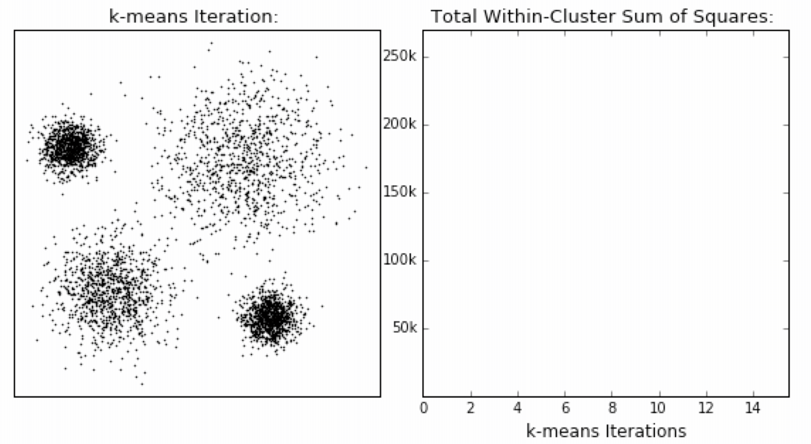

6.4 模型评估
学习目标
- 知道模型评估中的SSE、“肘”部法、SC系数和CH系数的实现原理
1 误差平方和
误差平方和(SSE \The sum of squares due to error)具体概念通过如下举例介绍：
举例:
(下图中数据-0.2, 0.4, -0.8, 1.3, -0.7, 均为真实值和预测值的差)

在k-means中的应用:

公式各部分内容:

上图中: k=2
- SSE图最终的结果,对图松散度的衡量.(eg: SSE(左图)<SSE(右图))
- SSE随着聚类迭代,其值会越来越小,直到最后趋于稳定:

- 如果质心的初始值选择不好,SSE只会达到一个不怎么好的局部最优解.

2 “肘”方法
“肘”方法 (Elbow method) 主要是用于确定聚类算法中的K值，具体流程如下：

（1）对于n个点的数据集，迭代计算k from 1 to n，每次聚类完成后计算每个点到其所属的簇中心的距离的平方和；
（2）平方和是会逐渐变小的，直到k==n时平方和为0，因为每个点都是它所在的簇中心本身。
（3）在这个平方和变化过程中，会出现一个拐点也即“肘”点，下降率突然变缓时即认为是最佳的k值。
在决定什么时候停止训练时，肘形判据同样有效，数据通常有更多的噪音，在增加分类无法带来更多回报时，我们停止增加类别。
3 轮廓系数法
轮廓系数法（Silhouette Coefficient）结合了聚类的凝聚度（Cohesion）和分离度（Separation），用于评估聚类的效果：

目的：
内部距离最小化，外部距离最大化

计算样本i到同簇其他样本的平均距离ai，ai 越小样本i的簇内不相似度越小，说明样本i越应该被聚类到该簇。
计算样本i到最近簇Cj 的所有样本的平均距离bij，称样本i与最近簇Cj 的不相似度，定义为样本i的簇间不相似度：bi =min{bi1, bi2, ..., bik}，bi越大，说明样本i越不属于其他簇。
求出所有样本的轮廓系数后再求平均值就得到了平均轮廓系数。
平均轮廓系数的取值范围为[-1,1]，系数越大，聚类效果越好。
簇内样本的距离越近，簇间样本距离越远
案例：
下图是500个样本含有2个feature的数据分布情况，我们对它进行SC系数效果衡量：

n_clusters = 2 The average silhouette_score is : 0.7049787496083262
n_clusters = 3 The average silhouette_score is : 0.5882004012129721
n_clusters = 4 The average silhouette_score is : 0.6505186632729437
n_clusters = 5 The average silhouette_score is : 0.56376469026194
n_clusters = 6 The average silhouette_score is : 0.4504666294372765
n_clusters 分别为 2，3，4，5，6时，SC系数如下，是介于[-1,1]之间的度量指标：
每次聚类后，每个样本都会得到一个轮廓系数，当它为1时，说明这个点与周围簇距离较远，结果非常好，当它为0，说明这个点可能处在两个簇的边界上，当值为负时，暗含该点可能被误分了。
从平均SC系数结果来看，K取3，5，6是不好的，那么2和4呢？
k=2的情况：

k=4的情况：

n_clusters = 2时，第0簇的宽度远宽于第1簇；
n_clusters = 4时，所聚的簇宽度相差不大，因此选择K=4，作为最终聚类个数。
4 CH系数
CH系数（Calinski-Harabasz Index）追求的是：类别内部数据的协方差越小越好，类别之间的协方差越大越好（换句话说：类别内部数据的距离平方和越小越好，类别之间的距离平方和越大越好）。
这样的Calinski-Harabasz分数s会高，分数s高则聚类效果越好。

tr为矩阵的迹, Bk为类别之间的协方差矩阵，Wk为类别内部数据的协方差矩阵;
m为训练集样本数，k为类别数。

使用矩阵的迹进行求解的理解：
矩阵的对角线可以表示一个物体的相似性
在机器学习里，主要为了获取数据的特征值，那么就是说，在任何一个矩阵计算出来之后，都可以简单化，只要获取矩阵的迹，就可以表示这一块数据的最重要的特征了，这样就可以把很多无关紧要的数据删除掉，达到简化数据，提高处理速度。
CH需要达到的目的：
用尽量少的类别聚类尽量多的样本，同时获得较好的聚类效果。
5 小结
- sse【知道】
- 误差平方和的值越小越好
- 肘部法【知道】
- 下降率突然变缓时即认为是最佳的k值
- SC系数【知道】
- 取值为[-1, 1]，其值越大越好
- CH系数【知道】
- 分数s高则聚类效果越好
- CH需要达到的目的：用尽量少的类别聚类尽量多的样本，同时获得较好的聚类效果。